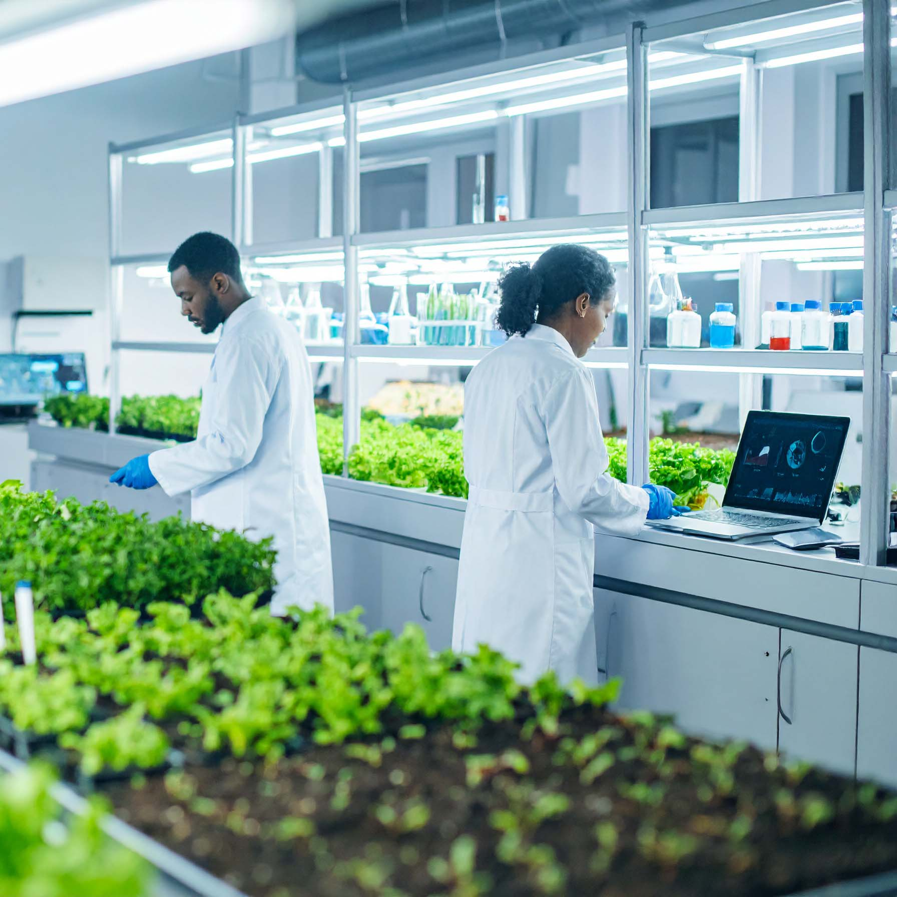

{{ 'research-title' | translate }}
{{ 'research-subtitle' | translate }}

Grupos de
Investigación
Semilleros de Investigación
Estos son espacios académicos de libre pensamiento, creatividad, análisis crítico, innovación y diálogo académico. En estos espacios, los estudiantes desarrollan habilidades investigativas, colaboran con docentes investigadores y participan en proyectos interdisciplinarios. Esta experiencia no solo contribuye a su formación integral, sino que también puede derivar en trabajos de grado de alto nivel o prepararlos para su ingreso a programas de posgrado.
Actualmente, el programa de Microbiología cuenta con 14 semilleros. La articulación entre semilleros, grupos de investigación y líneas del programa es clave para consolidar una comunidad académica activa y productiva, alineada con los objetivos formativos del currículo.
{{ 'more-info' | translate }}
Líneas de Investigación
Áreas temáticas que orientan nuestros proyectos de investigación en microbiología
{{ line.name }}
{{ line.description }}